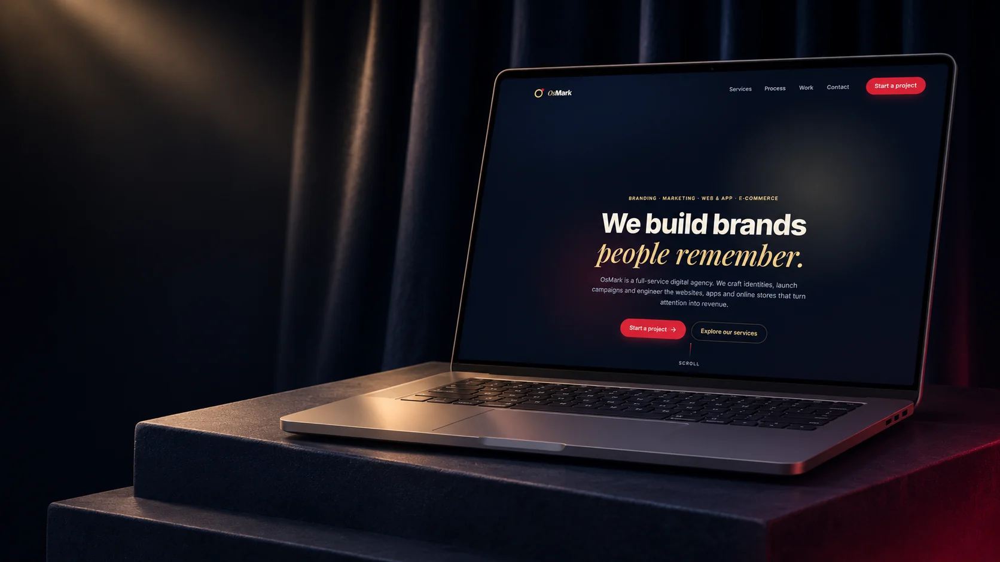
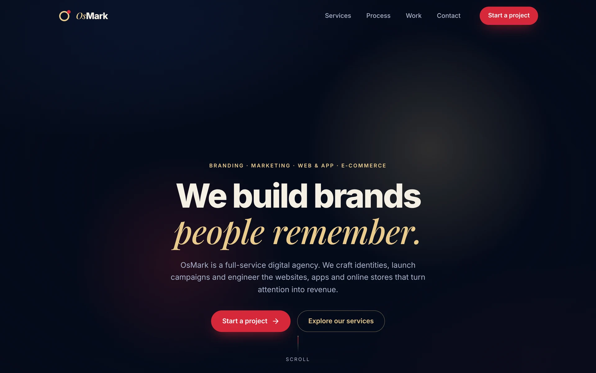
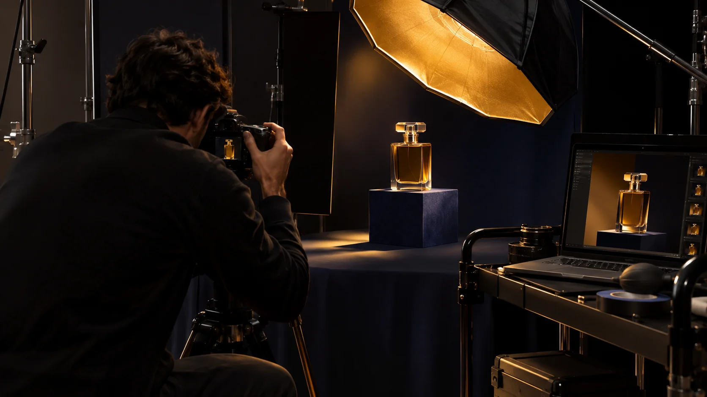
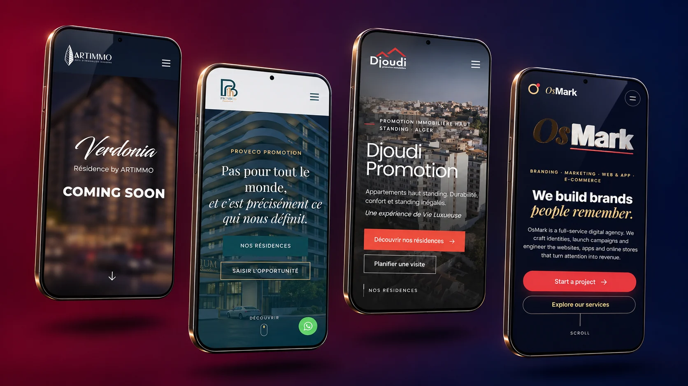
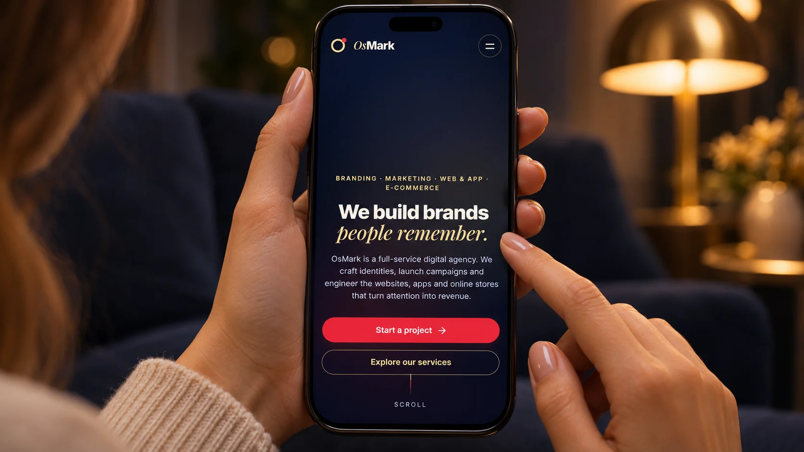

Branding · Marketing · Web & App · E‑commerce
The agency behind brands people remember.
OsMark is a full-service digital agency. We craft identities, shoot the content and build the websites, apps and stores that turn attention into revenue.
Behind the lens.
We plan, shoot and publish the content your brand runs on, from the first moodboard to the last post.

Product campaigns
Studio shoots that make one product look like the only one on the shelf.
Creator & social content
Vertical video made for the feed, with creators your audience already trusts.
Brand & art direction
Every shoot starts at the table: references, palette and one clear idea.
Sites and apps we've shipped.

- ArtimmoVerdonia residence launch
- Proveco PromotionReal estate website
- Djoudi PromotionReal estate website, Algiers
- OsMarkOur own studio site
One team, five crafts.
Brand identity
Naming, logo systems, typography and guidelines made to be recognised in a split second.
Marketing & content
Campaign shoots, creator content, paid social and search, measured on what they sell.
Websites
Fast, accessible sites your team can update without calling a developer.
Mobile apps
iOS and Android apps designed around real habits and launched to be found.
E‑commerce
Stores with a smooth checkout, connected payments and the growth plan to fill them.

Your brand, in their hands.
Tell us what you're building. We reply within one business day.